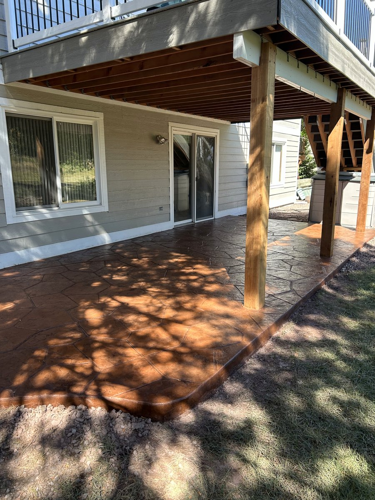
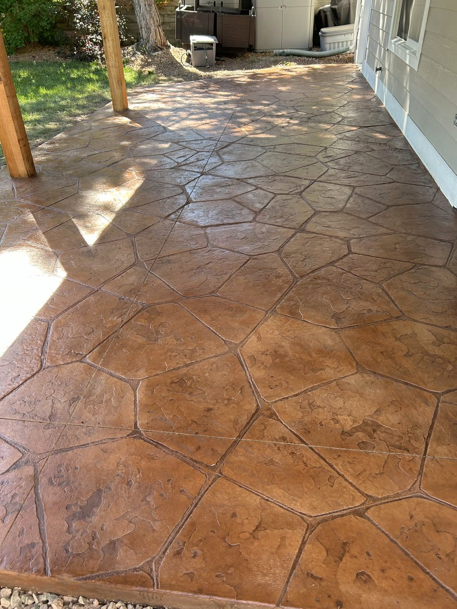

Elevate your outdoor space with custom stamped concrete — beautiful, durable, and built to handle Colorado's climate.
Get a Free QuoteStamped concrete is one of the most popular ways Denver and Littleton homeowners upgrade their patios, driveways, pool decks, and walkways. It delivers the high-end look of natural stone, brick, or wood at a fraction of the cost — and it's engineered to hold up through Colorado's notorious freeze-thaw cycles, hailstorms, and intense Front Range sun.
We design and install custom stamped concrete surfaces throughout the Denver metro area, including Littleton, Highlands Ranch, Englewood, and surrounding communities. Every project is tailored to your property's style, your HOA requirements, and how you want to use the space.

Stamped concrete works beautifully across a wide range of outdoor surfaces. Denver and Littleton homeowners use it to create cohesive, high-end outdoor living spaces that complement their home's architecture and landscaping.
A stamped concrete patio is the most popular choice for Denver homeowners looking to upgrade their backyard. Choose from dozens of patterns and color combinations to create a unique surface that looks like natural stone or pavers.
Stamped concrete driveways and front walkways dramatically boost curb appeal in Littleton and Denver neighborhoods. Decorative borders, color accents, and custom patterns set your home apart from the rest of the street.
Stamped concrete pool decks offer a slip-resistant, heat-reflective surface that stands up to Colorado's sun and pool chemicals. We also stamp concrete steps and retaining walls to create a seamless outdoor look.
One of the biggest advantages of stamped concrete is the sheer variety of looks you can achieve. Our Denver and Littleton clients regularly choose from patterns and finishes that complement both modern and traditional home styles along the Front Range.

Stamped concrete in Denver and Littleton must be installed and sealed correctly to handle Colorado's wide temperature swings, heavy snow seasons, and intense UV exposure. Poorly installed decorative concrete can crack, fade, or spall within a few years. We use proper sub-base preparation, control joint placement, and high-quality sealers to ensure your investment lasts for decades.
Installing stamped concrete in Colorado requires hands-on experience with local soil, weather patterns, and building codes. Our team has completed hundreds of decorative concrete projects across Denver, Littleton, Highlands Ranch, Englewood, and the greater Front Range.
We understand Denver and Littleton's unique climate challenges and design every stamped concrete project to handle freeze-thaw cycles, hail, and high-altitude UV without cracking or fading prematurely.
We work with you to select patterns, colors, and borders that match your home's style and your neighborhood aesthetic — no cookie-cutter slabs.
From site prep and permitting to finishing and sealing, we handle the entire project so your new stamped concrete surface is done right the first time.